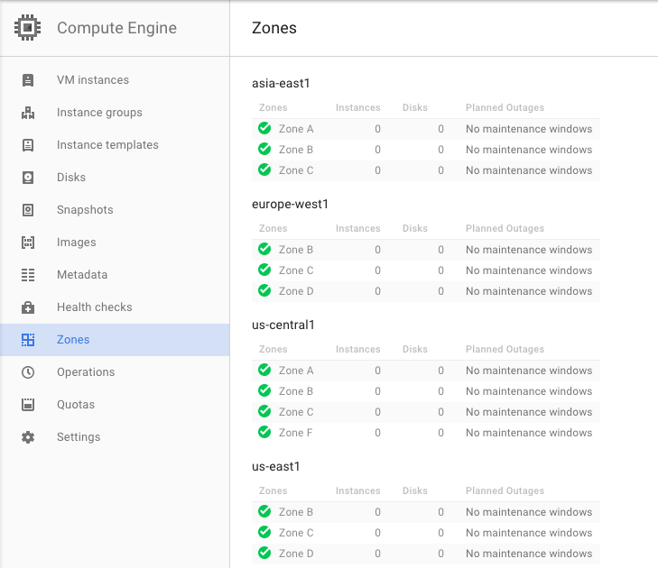
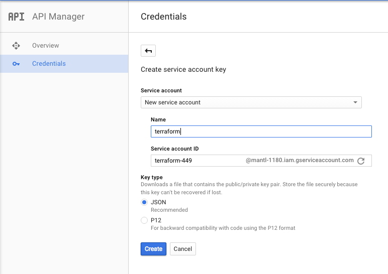

New in version 1.0: multi-zone support and terraform modularization
As of Mantl 0.3 you can bring up Google Compute Engine environments using Terraform. Mantl uses Terraform to provision hosts. You can download Terraform from terraform.io.
Before we can build any servers using Terraform and Ansible, we need to configure authentication. We’ll be filling in the authentication variables for the template located at terraform/gce.sample.tf. The beginning of it looks like this:
variable "control_count" { default = 3 }
variable "datacenter" {default = "gce"}
variable "edge_count" { default = 3}
variable "image" {default = "centos-7-v20150526"}
variable "long_name" {default = "mantl"}
variable "short_name" {default = "mi"}
variable "ssh_key" {default = "~/.ssh/id_rsa.pub"}
variable "ssh_user" {default = "centos"}
variable "worker_count" {default = 1}
variable "zones" {
default = "us-central1-a,us-central1-b"
}
provider "google" {
account_file = ""
credentials = "${file("account.json")}"
project = "mantl-0000"
region = "us-central1"
}
Copy that file in it’s entirety to the root of the project as gce.tf to start customization. In the next sections, we’ll explain how to obtain these settings.
project, region and zones are unique values for each project in Google Compute Engine. project is available from the project overview page (use the Project ID not the Project Name.) You can select which region and zones you want to use from any of the GCE zones (see the image below) If you’re in the United States, (region) us-central1 and (zones) us-central1-a,us-central1-b,us-central1-c are a good choice. If you’re in Europe, europe-west1 and europe-west1-b,europe-west1-c might be your best bets. If you haven’t previously activated Compute Engine for your project, this is a good time to do it.
If you don’t want to commit these values in a file, you can source them from the environment instead:
The ID of a project to apply resources to.
The region to operate under.
image is the GCE image to use for your cluster instances. You can find image names under Images in the Compute Engine section of the GCP console.
ssh_username is the default user name for SSH access to your cluster hosts. This value will be dependent on the image that you use. Common values are centos or rhel.
datacenter is a name to identify your datacenter, this is important if you have more than one datacenter.
short_name is appended to the name tag and dns (if used) of each of the nodes to help better identify them.
control_count, edge_count and worker_count are the number of GCE instances that will get deployed for each node type.
control_type, edge_type and worker_type are used to specify the GCE machine type .
Terraform also needs service account to be able to create and manage resources in your project. You can create one by going to the “Credentials” screen under “API Manager” in the GCP Product and Services menu. Service accounts are created under New credentials -> Service account key.
Note
You’ll need to be an account owner to create this file - if you’re not, ask your account owner to do this step for you.
You will either need to create an new service account or use an exisiting one. For this example we created one called terraform.
Once you’ve created your account, your browser will download a JSON file containing the credentials. Point credentials to the path you decide to store that file in. If you’re running Terraform from a Google Compute instance with an associated service account, you may leave the credentials parameter blank.
Once you’re all set up with the provider, customize your modules (for control_count, edge_count and worker_count). Make sure your local ssh-agent is running and your ssh key has been added, this is requrired by the Terraform provisioner. Run ssh-add ~/.ssh/id_rsa to add your ssh key. Run terraform get to prepare Terraform to provision your cluster, terraform plan to see what will be created, and terraform apply to provision the cluster. Afterwards, you can use the instructions in getting started to install Mantl on your new cluster.
Note
If you get the below when running terraform plan or apply, you will need to add : account_file = "" to the provider section of your gce.tf file.:
provider.google.account_file
Enter a value:
This is a know bug in older versions of terraform.
Terraform stores the state of your infrastructure in a file called “terraform.tfstate”. This file can be stored locally or in a remote location such as consul. If you use the gce.sample.tf that is provided, by default the state of all the modules are stored in local terraform.tfstate file at the root of this project.
Instead of storing the state for all the modules in one file, you might deploy the modules independently and have different terraform.tfstate for each module (either locally or remote). This can help with blue/green deployments, or making sure you don’t accidently override more static parts of the infrastructure such as the network.
In the gce.sample.tf we have included examples of how you would reference a remote state file for network variables.
To create terraform.tfstate locally for the network module, you would simply run terraform get, terraform plan and terraform apply in the terraform/gce/network/ directory. Then in your gce.tf file you would want to comment out:
#module "gce-network" {
# source = "./terraform/gce/network"
# network_ipv4 = "10.0.0.0/16"
#}
and uncomment:
resource "terraform_remote_state" "gce-network" {
backend = "_local"
config {
path = "./terraform/gce/network/terraform.tfstate"
}
}
and change all the network_name variables for the nodes to be:
network_name = "${terraform_remote_state.gce-network.output.network_name}"
Ideally you would store the state remotely, but configuring that is outside the scope of this document. This is a good explanation on how to configure and use remote state.